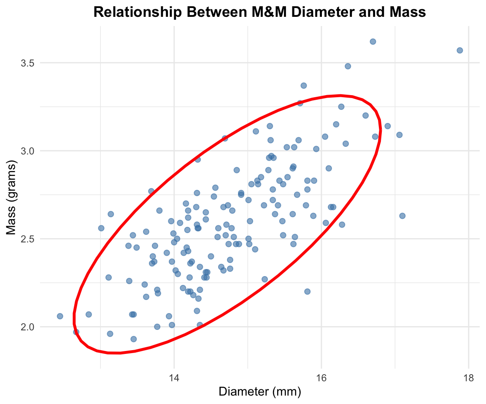
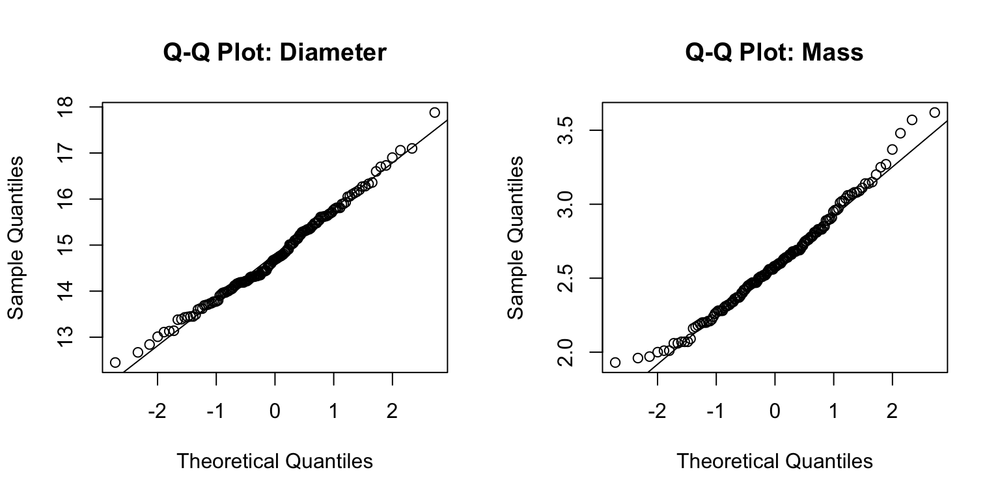
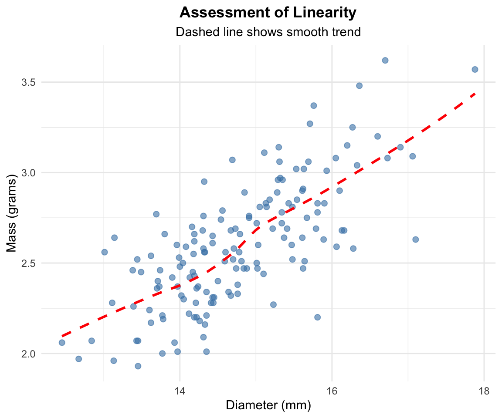

Correlation analysis is used to quantify the strength and direction of the linear relationship between two continuous variables. In this analysis, we will examine whether there is a relationship between M&M diameter and mass in peanut M&Ms.
The Pearson correlation coefficient (r) measures the linear relationship between two variables and ranges from -1 to +1:
r = +1: Perfect positive linear relationship
r = 0: No linear relationship
r = -1: Perfect negative linear relationship
The correlation analysis tests the following hypotheses:
\[H_0: \rho = 0\]\[H_A: \rho \neq 0\]
Where:
\(H_0\) is the null hypothesis stating that there is no correlation in the population
\(H_A\) is the alternative hypothesis stating that there is a correlation in the population
\(\rho\) (rho) represents the population correlation coefficient
NoteKey Concept
Correlation measures the strength of a linear relationship between two variables. It does not imply causation and both variables are typically measured (neither is manipulated).
Loading Libraries and Data
# Load required librarieslibrary(skimr) # For summary statisticslibrary(car) # For diagnostic testslibrary(tidyverse) # For data manipulation and plotting# Load the M&M peanut datapeanut_df <-read_csv("data/mms_peanut.csv")# Preview the data structurehead(peanut_df)
# A tibble: 6 × 4
center color diameter mass
<chr> <chr> <dbl> <dbl>
1 peanut orange 14.8 2.38
2 peanut yellow 14.2 2.37
3 peanut red 13.0 2.56
4 peanut yellow 14.7 2.52
5 peanut green 15.5 2.85
6 peanut yellow 13.5 2.45
Data Exploration
Summary Statistics
Let’s examine the structure and summary statistics of our variables of interest:
# Get summary statistics for diameter and masspeanut_df %>%select(diameter, mass) %>%skim() %>%select(-complete_rate, -n_missing)
Data summary
Name
Piped data
Number of rows
153
Number of columns
2
_______________________
Column type frequency:
numeric
2
________________________
Group variables
None
Variable type: numeric
skim_variable
mean
sd
p0
p25
p50
p75
p100
hist
diameter
14.77
0.98
12.45
14.13
14.69
15.47
17.88
▂▇▇▃▁
mass
2.60
0.34
1.93
2.36
2.58
2.81
3.62
▃▇▆▃▁
Exploratory Visualization
Scatter Plot with Correlation Ellipse
# Create scatter plot with correlation ellipsecorrelation_plot <- peanut_df %>%ggplot(aes(x = diameter, y = mass)) +geom_point(alpha =0.6, size =2, color ="steelblue") +stat_ellipse(color ="red", linewidth =1.2) +labs(title ="Relationship Between M&M Diameter and Mass",x ="Diameter (mm)",y ="Mass (grams)" ) +theme_minimal() +theme(plot.title =element_text(hjust =0.5, face ="bold") )correlation_plot

TipInterpreting Scatter Plots with Ellipses
The correlation ellipse shows the general pattern of the relationship:
Narrow ellipse: Strong correlation
Wide ellipse: Weak correlation
Positive slope: Positive correlation
Negative slope: Negative correlation
Correlation Analysis Assumptions
Before conducting correlation analysis, we must verify that our data meets the required assumptions:
Assumptions of Pearson Correlation
Linearity: The relationship between variables is linear
Bivariate normality: Both variables are normally distributed
Independence: Observations are independent of each other
ImportantIndependence Assumption
Independence is primarily a design issue. We assume that each M&M was measured independently and that the diameter of one M&M does not influence another.
Testing Normality Assumptions
Visual Assessment with Q-Q Plots
# Create Q-Q plots for both variablespar(mfrow =c(1, 2))# Q-Q plot for diameterqqnorm(peanut_df$diameter, main ="Q-Q Plot: Diameter")qqline(peanut_df$diameter)# Q-Q plot for massqqnorm(peanut_df$mass, main ="Q-Q Plot: Mass")qqline(peanut_df$mass)

Formal Tests for Normality
# Shapiro-Wilk test for diametershapiro.test(peanut_df$diameter)
Shapiro-Wilk normality test
data: peanut_df$diameter
W = 0.99025, p-value = 0.3725
# Shapiro-Wilk test for massshapiro.test(peanut_df$mass)
Shapiro-Wilk normality test
data: peanut_df$mass
W = 0.9844, p-value = 0.08203
TipInterpreting Normality Tests
Q-Q Plots: Points should follow the diagonal line closely
Shapiro-Wilk Test: - Null hypothesis: Data are normally distributed - p > 0.05: Fail to reject null hypothesis (data appear normal) - p ≤ 0.05: Reject null hypothesis (data not normal)
Testing Linearity Assumption
# Create scatter plot to assess linearitylinearity_plot <- peanut_df %>%ggplot(aes(x = diameter, y = mass)) +geom_point(alpha =0.6, size =2, color ="steelblue") +geom_smooth(method ="loess", se =FALSE, color ="red", linetype ="dashed") +labs(title ="Assessment of Linearity",subtitle ="Dashed line shows smooth trend",x ="Diameter (mm)",y ="Mass (grams)" ) +theme_minimal() +theme(plot.title =element_text(hjust =0.5, face ="bold"),plot.subtitle =element_text(hjust =0.5) )linearity_plot

NoteLinearity Assessment
The dashed line should be approximately straight if the relationship is linear. Curves or bends suggest non-linear relationships that may require transformation or non-parametric methods.
Pearson's product-moment correlation
data: peanut_df$diameter and peanut_df$mass
t = 13.088, df = 151, p-value < 2.2e-16
alternative hypothesis: true correlation is not equal to 0
95 percent confidence interval:
0.6449556 0.7956608
sample estimates:
cor
0.729025
Line-by-Line Interpretation of Correlation Output
Data Information: - Shows the variables being correlated (diameter and mass)
Test Statistic (t): - The t-statistic used to test if the correlation differs from zero - Calculated as: t = r × √((n-2)/(1-r²))
Degrees of Freedom (df): - Equal to n - 2, where n is the sample size - Used to determine the p-value from the t-distribution
P-value: - Probability of observing this correlation (or stronger) if the true correlation were zero - Compare to α = 0.05 for significance
95% Confidence Interval: - Range of plausible values for the true population correlation - If the interval includes 0, the correlation is not significant
Sample Estimates: - cor: The Pearson correlation coefficient (r) - Interpretation guide: - 0.00 to ±0.30: Weak correlation - ±0.30 to ±0.70: Moderate correlation
- ±0.70 to ±1.00: Strong correlation
cat("Coefficient of determination (r²):", round(r_squared, 3), "\n")
Coefficient of determination (r²): 0.531
cat("Percentage of variance explained:", round(r_squared *100, 1), "%")
Percentage of variance explained: 53.1 %
ImportantUnderstanding r²
The coefficient of determination (r²) tells us the proportion of variance in one variable that is predictable from the other variable. For example, if r² = 0.64, then 64% of the variance in mass can be explained by diameter.
Alternative: Non-parametric Correlation
If normality assumptions are violated, we can use Spearman’s rank correlation:
Spearman's rank correlation rho
data: peanut_df$diameter and peanut_df$mass
S = 174990, p-value < 2.2e-16
alternative hypothesis: true rho is not equal to 0
sample estimates:
rho
0.7068374
NoteWhen to Use Spearman’s Correlation
Use Spearman’s rank correlation when:
Data are not normally distributed
The relationship is monotonic but not necessarily linear
Data contain outliers that affect Pearson’s correlation
Working with ordinal data
Methods Section (for publication)
Statistical Analysis
The relationship between M&M diameter and mass was assessed using Pearson’s product-moment correlation. Prior to analysis, assumptions of linearity, bivariate normality, and independence were evaluated using scatter plots, Q-Q plots, and Shapiro-Wilk tests. The strength and direction of the linear relationship was quantified using the Pearson correlation coefficient (r), with 95% confidence intervals calculated. The coefficient of determination (r²) was calculated to determine the proportion of variance explained. All analyses were conducted in R (version 4.3.0) with α = 0.05.
Results Section (for publication)
There was a statistically significant positive correlation between M&M diameter and mass (r = [value], 95% CI: [lower, upper], p < 0.001). The correlation was [weak/moderate/strong] in magnitude and indicated that [interpretation]. The coefficient of determination revealed that diameter explained [percentage]% of the variance in M&M mass (r² = [value]). Both variables met assumptions of normality (Shapiro-Wilk tests: diameter p = [value], mass p = [value]), supporting the use of Pearson’s correlation.
Figure 1. Relationship between diameter and mass in peanut M&Ms (n = 153). The correlation ellipse (purple line) shows the 95% confidence region for the bivariate normal distribution. There was a significant positive correlation between diameter and mass (r = [value], p < 0.001).
Conclusions
The correlation analysis revealed a [significant/non-significant] [positive/negative] relationship between M&M diameter and mass. This finding [supports/does not support] the expectation that larger M&Ms would be heavier, which makes biological and physical sense given that increased diameter likely corresponds to increased volume and thus mass.
The [strength of correlation] suggests that diameter is a [good/moderate/poor] predictor of mass in peanut M&Ms. The coefficient of determination indicates that [percentage]% of the variation in mass can be explained by diameter, with the remaining variation likely due to factors such as:
Variation in chocolate thickness
Differences in peanut size and density
Manufacturing variability
Measurement error
WarningImportant Considerations
Remember that correlation does not imply causation. While diameter and mass are correlated, we cannot conclude that changing diameter causes changes in mass. Both variables likely depend on underlying manufacturing processes and ingredient properties.
This analysis demonstrates the appropriate use of correlation analysis for exploring relationships between continuous variables when neither variable is experimentally manipulated. The correlation coefficient provides a standardized measure of association that can be compared across different studies and datasets.